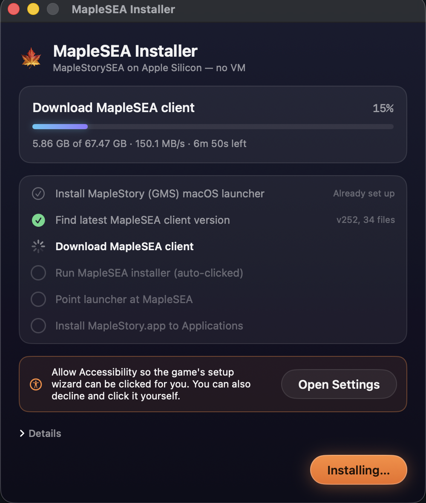

Run MapleStorySEA natively on Apple Silicon — no VM, no Boot Camp.
Free & open source · MIT licensed · you build it, it installs everything else

Nexon's official GMS macOS client ships a customised Crossover/Wine wrapper. This installer repoints that wrapper at MapleStorySEA: it installs the GMS launcher if needed, fetches the latest SEA full client straight from PlayPark's servers, runs the installer under Wine (clicking the wizard for you), and wires the launcher to boot MapleSEA directly. One click, done.
.ms-launch-args into the bottle and locks it so the launcher can't delete it.Requires macOS 14+ and the Xcode Command Line Tools (xcode-select --install).
git clone https://github.com/hoshinoht/MaplestorySEA-Macos.git
cd MaplestorySEA-Macos
./build.sh
open "build/MapleSEA Installer.app"The app is ad-hoc signed, so on first launch macOS will block it once — approve it under System Settings → Privacy & Security → "Open Anyway".
Is this a private server or a hack? No. It runs the unmodified official MapleSEA client through Nexon's own macOS Wine wrapper. Every game file is downloaded from official Nexon/PlayPark servers — this project ships zero game content.
Does this work for other regions? In principle yes — region specifics (CDN, install path, part count) live in one config struct. PRs welcome.
Something broke? Open an issue with the app's log output ("Details" at the bottom of the window).